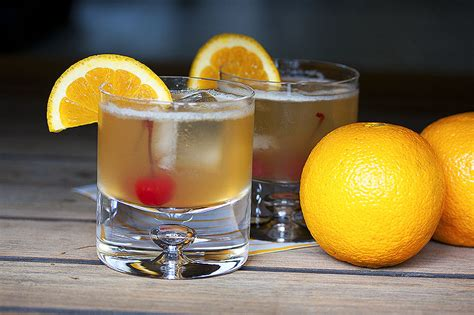

Whiskey Sour

Description
The whiskey sour is a mixed drink containing whiskey (often bourbon), lemon juice, sugar, and optionally, a dash of egg white. It is a type of sour, a mixed drink with a base spirit, citrus juice, and a sweetener.
Ingredients
- 2 ounces whiskey
- 3/4 ounce freshly squeezed lemon juice
- 1/2 to 3/4 ounce simple syrup, to taste
- Maraschino cherry (or lemon peel), garnish
Steps
- Gather the ingredients
- Place a sugar cube or sugar in an old-fashioned glass and saturate it with bitters. Muddle or stir to mix
- Add the whiskey, fill the glass with ice, and stir well.
- Express the orange peel over the drink before dropping it into the glass: Twist up the peel and give it a good squeeze (directed toward the glass, not your eyes) and bits of citrus oil will spray into the drink. Add a cherry if you like.